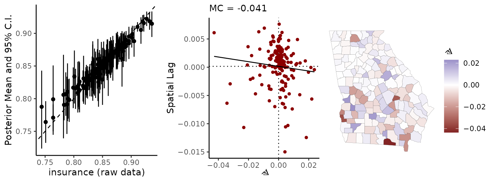

vignettes/spatial-me-models.Rmd
spatial-me-models.RmdThis vignette introduces users to the spatial measurement error (ME) models implemented in the geostan package (Donegan, Chun, and Griffith 2021). Variations on this methodology have been examined previously by multiple authors (Bernadinelli et al. 1997; Kang, Liu, and Cressie 2009; Logan et al. 2020; Xia and Carlin 1998).
These models are designed for spatial models that use survey estimates as covariates. They are designed for use with American Community Survey (ACS) data and other large, government-backed surveys. A premise of this methodology is that the survey includes a systematic spatial sampling design (i.e., the sampling procedure was stratified by the areal unit of interest, whether they be block groups, counties, or states).
In a (spatial) regression analysis, measurement/sampling error in covariates can lead to model parameter estimates that are overly-confident and prone to bias. This can lead to under- or over-estimation of population risks and needs, mainly because the noisy survey-based covariate passes directly into predictive values. This may impact real communities and service providers (see Bazuin and Fraser 2013). Examining the standard errors or margins of error of small-area survey estimates is an important first step that can help one determine whether a measurement error model should be considered.
Spatial measurement error models allow us to incorporate knowledge of data quality and human geography into our analyses, so that the final model results may better reflect our state of knowledge than they otherwise would. These models account for sampling error, but cannot address other sources of bias and error that may be present in survey estimates.
The measurement error (ME) models implemented in geostan are hierarchical Bayesian models (HBMs) that incorporate two sources of information:
The model treats the true value \(\boldsymbol x\) as an unknown parameter or a latent variable. The goal is to obtain a probability distribution for \(\boldsymbol x\). That information can then be incorporated into any of geostan’s regression or disease mapping models.
To represent the general social and technical knowledge on which this model is premised, we write \(\mathcal{M}\). This background knowledge includes, for example, that the data came from the valid small-area spatial sampling design.
The sampling distribution (a likelihood statement) states the following: if the true median income value is \(x_i\), then the probability of obtaining survey estimate \(z_i\) is \[ p(z_i | x_i , \mathcal{M}) = Gauss(z_i | x_i, s_i) \] where \(s_i\) is the standard error of the estimate. This is saying, more directly, that the true value \(x_i\) is probably within two standard errors of the estimate.
Our background knowledge on \(x\) is the second component of the model. This is simply the knowledge that social variables tend to be spatially patterned. Specifically, extreme values are not implausible, although they tend to be clustered together.
This information is encoded into a prior probability distribution for the unknown values \(\boldsymbol x\), using the spatial conditional autoregressive (CAR) model: \[ p(\boldsymbol x | \mathcal{M}) = Gauss(\boldsymbol x | \mu \boldsymbol 1, \boldsymbol \Sigma) \] where the bold symbols are used to indicate an object is a column vector or matrix.
The equation above states that the unknown values \(\boldsymbol x\) are spatially autocorrelated, with a mean value of \(\mu\) and covariance matrix \[\boldsymbol \Sigma = (I - \rho C)^{-1} M,\] where \(\rho\) is a spatial autocorrelation parameter, \(I\) is the \(n \times n\) identity matrix, and \(C\) is a spatial connectivity matrix. \(M\) is an \(n \times n\) diagonal matrix; its diagonal contains the row-sums of \(C\) multiplied by a scale parameter \(\tau\) (Donegan 2022, Table 1 WCAR specification).
If \(\boldsymbol x\) is a rate variable—e.g., the poverty rate—it can be important to use a logit-transformation (Logan et al. 2020) as follows: \[ p(logit(\boldsymbol x) | \mathcal{M}) = Gauss(logit(\boldsymbol x) | \mu \boldsymbol 1, \boldsymbol \Sigma) \]
The CAR parameters \(\mu\), \(\rho\), and \(\tau\) all require prior probability distributions; geostan uses the following by default:
\[\begin{equation} \begin{split} \mu &\sim Gauss(0, 100) \\ \tau &\sim Student_t(10, 0, 40) \\ \rho &\sim Uniform(\text{lower_bound}, \text{upper_bound}) \end{split} \end{equation}\]
The default prior for \(\rho\) is uniform across its entire support (determined by the extreme eigenvalues of \(C\))
For a sense of how all of this information gets combined in the model, consider two hypothetical survey estimates.
The first has a small standard error—it is a reliable data point—and it is also similar to its surrounding counties. In that case, the probability distribution for \(x_i\) is going to look similar to the raw estimate and its standard error. Now consider a second county, where the estimate has a large standard error—it is unreliable—and the estimate is also dissimilar from its neighbors. In this case, we ought to consider it quite probable that the estimate \(x_i\) is far from the truth. This means that the probability distribution for \(x_i\) that comes from our model may be quite different from the raw estimate. That shift is often referred to as “shrinkage,” although the shift may be in either direction (up or down).
If a non-spatial prior model for \(\boldsymbol x\) were used instead of the CAR model, then there would be a tendency for all survey estimates \(z_i\) that are far from the mean to be shrunk towards the ‘global mean’, instead of the local area mean. This can lead to blatant social biases in ME models when they are applied to spatial data (Donegan, Chun, and Griffith 2021). For that and other reasons, the spatial CAR model is often essential for spatial ME models, and it remains important to graphically evaluate results (see below).
When we add a spatial ME model to a spatial regression model, the model results will automatically average over the uncertain inferences we make about \(\boldsymbol x\). The inferential biases that follow from ignoring measurement/observational uncertainty will be addressed, meaning that the probability distributions for the parameters will reflect the information we have on data quality. It is important to understand that there may still be un-modeled forms of bias and error in the ACS estimates—due to response bias and other sources—beyond the amount that is attributed to sampling error.
From the R console, load the geostan package.
The line data(georgia) loads the georgia data set from the geostan package into your working environment. You can learn more about the data by entering ?georgia to the R console.
Users can add a spatial ME model to any geostan model. A list of data for the ME models can be prepared using the prep_me_data function. The function requires at least two inputs from the user:
se A data frame with survey standard errors.car_parts A list of data created by the prep_car_data function.It also has optional inputs:
bounds A length-two vector giving the minimum and maximum values that the covariate may take on.prior A list of prior distributions for the CAR model parameters.logit A vector of logical values (TRUE or FALSE) specifying if the variate should be logit transformed. Only use this for rates (between 0 and 1).The default prior distributions are designed to be fairly vague relative to ACS variables (including percentages from 0-100), assuming that magnitudes such as income have been log-transformed already.
The logit-transformation is often required for skewed rates, such as the poverty rate. Note that the user can not do this transformation on their own (i.e., before passing the data to the model), they must use the logit argument in prep_me_data.
The bounds argument may be needed for rates, which are bounded by zero and one. Even if the logit argument is used, the sampling distribution still needs to be bounded. This functionality has limitations. If the bounds argument is used, it will apply to all of the modeled covariates (which might not make sense at all). It also causes the model to slow down. If none of the estimates (\(\pm\) two standard errors or so) approach the boundaries, then the bounds argument can be safely ignored. This argument should be used if needed, but avoided when possible.
To demonstrate, take the percent of the population with health insurance coverage georgia$insurance. The estimates are stored as percentages; we are going to divide them and their standard errors by 100 to make them rates:
georgia$insurance <- georgia$insurance / 100
georgia$insurance.se <- georgia$insurance.se / 100We want to check if any of the estimates are near their maximum and minimum values (zero and one):
max(georgia$insurance + georgia$insurance.se*2)## [1] 0.9615319
min(georgia$insurance - georgia$insurance.se*2)## [1] 0.6686201None of the estimates are quite pushing against their maximum value (1), and none are anywhere near the minimum (0), so we can ignore the boundary constraint for now.
Now we need to gather the standard errors georgia$insurance.se into a data frame. The column name must match the name of the variable it refers to (“insurance”):
SE <- data.frame(insurance = georgia$insurance.se)If we had additional survey-based covariates that we were intending to model, we would simply add their standard errors to this data frame.
To prepare the CAR data, we create a binary spatial connectivity matrix, and then pass it to prep_car_data to prepare our list of data for the CAR model:
C <- shape2mat(georgia, "B")
cars <- prep_car_data(C)## Range of permissible rho values: -1.661134 1Now we use prep_me_data. We are going to use the logit-transform, since we are working with rates:
ME_list <- prep_me_data(se = SE,
car_parts = cars,
logit = TRUE
)Now we are ready to begin modeling the data.
The following code chunk sets up a spatial model for male county mortality rates (ages 55-64) using the insurance variable as a covariate (without the spatial ME model):
fit <- stan_car(deaths.male ~ offset(log(pop.at.risk.male)) + insurance,
centerx = TRUE,
data = georgia,
family = poisson(),
car_parts = cars)To add the spatial ME model to the above specification, we simply provide our ME_list to the ME argument:
fit <- stan_car(deaths.male ~ offset(log(pop.at.risk.male)) + insurance,
centerx = TRUE,
ME = ME_list,
family = poisson(),
data = georgia,
car_parts = cars,
iter = 650, # for demo speed
refresh = 0, # minimizes printing
)## location scale
## 1 -4.2 5
## location scale
## 1 0 15
## df location scale
## 1 10 0 3
## lower upper
## 1 -1.7 1## Warning: Bulk Effective Samples Size (ESS) is too low, indicating posterior means and medians may be unreliable.
## Running the chains for more iterations may help. See
## https://mc-stan.org/misc/warnings.html#bulk-ess## Warning: Tail Effective Samples Size (ESS) is too low, indicating posterior variances and tail quantiles may be unreliable.
## Running the chains for more iterations may help. See
## https://mc-stan.org/misc/warnings.html#tail-ess
print(fit)## Spatial Model Results
## Formula: deaths.male ~ offset(log(pop.at.risk.male)) + insurance
## Spatial method (outcome): CAR
## Likelihood function: poisson
## Link function: log
## Residual Moran Coefficient: -0.001326923
## WAIC: 1320.54
## Observations: 159
## Data models (ME): insurance
## Data model (ME prior): CAR (auto Gaussian)
## Inference for Stan model: foundation.
## 4 chains, each with iter=650; warmup=325; thin=1;
## post-warmup draws per chain=325, total post-warmup draws=1300.
##
## mean se_mean sd 2.5% 25% 50% 75% 97.5% n_eff Rhat
## intercept -4.163 0.005 0.074 -4.282 -4.198 -4.166 -4.132 -4.043 189 1.021
## insurance -2.678 0.021 0.740 -4.126 -3.164 -2.686 -2.178 -1.299 1301 1.002
## car_rho 0.868 0.003 0.085 0.663 0.820 0.884 0.931 0.988 659 1.000
## car_scale 0.449 0.001 0.033 0.390 0.425 0.447 0.472 0.516 846 1.001
##
## Samples were drawn using NUTS(diag_e) at Sun Oct 1 11:33:45 2023.
## For each parameter, n_eff is a crude measure of effective sample size,
## and Rhat is the potential scale reduction factor on split chains (at
## convergence, Rhat=1).The CAR models in geostan can be highly efficient in terms of MCMC sampling, but the required number of iterations will depend on many characteristics of the model and data. Often the default iter = 2000 is more than sufficient (with cores = 4). To speed up sampling with multi-core processing, use cores = 4 (to sample 4 chains in parallel).
In the following section, methods for examining MCMC samples of the modeled covariate values \(\boldsymbol x\) will be illustrated. Note that the process of storing MCMC samples for \(\boldsymbol x\) can become computationally burdensome if you have multiple covariates and moderately large N. If you do not need the samples of \(\boldsymbol x\) you can use the slim argument, as in:
fit <- stan_car(deaths.male ~ offset(log(pop.at.risk.male)) + insurance,
centerx = TRUE,
ME = ME_list,
slim = TRUE,
family = poisson(),
data = georgia,
car_parts = cars
)Using slim = TRUE may be faster (particularly for larger data sets), but will prevent the collection of MCMC samples for quantities of interest such as fitted values, pointwise log-likelihood values (required for WAIC), and modeled covariates \(\boldsymbol x\). The drop argument to the model fitting functions (e.g., stan_car) provides more control over which parameters are saved.
The me_diag provides some useful diagnostics for understanding how the raw estimates compare with the modeled values.
First, it provides a point-interval scatter plot that compares the raw survey estimates (on the horizontal axis) to the modeled values (on the vertical axis). The (posterior) probability distributions for the modeled values are represented by their 95% credible intervals. The intervals provide a sense of the quality of the ACS data—if the credible intervals on the modeled value are large, this tells us that the data are not particularly reliable.
The me_diag function also provides more direct visual depictions of the difference between the raw survey estimates \(z_i\) an the modeled values \(x_i\): \[\delta_i = z_i - x_i.\] We want to look for any strong spatial pattern in these \(\delta_i\) values, because that would be an indication of a bias. However, the magnitude of the \(\delta_i\) value is important to consider—there may be a pattern, but if the amount of shrinkage is very small, that pattern may not matter. (The model returns \(M\) samples from the posterior distribution of each \(x_i\); or, indexing by MCMC sample \(x_i^m\) (\(m\) is an index, not an exponent). The reported \(\delta_i\) values is the MCMC mean \(\delta_i = \frac{1}{M} \sum_m z_i - x_i^m\).)
Two figures are provided to evaluate patterns in \(\delta_i\): first, a Moran scatter plot and, second, a map.
me_diag(fit, 'insurance', georgia)
In this case, the results do not look too concerning insofar as there are no conspicuous patterns. However, a number of the credible intervals on the modeled values are large, which indicates low data reliability. The fact that some of the \(\delta_i\) values are substantial also points to low data quality for those estimates.
It can be important to understand that the ME models are not independent from the rest of the model. When the modeled covariate \(\boldsymbol x\) enters a regression relationship, that regression relationship can impact the probability distribution for \(\boldsymbol x\) itself. (This is a feature of all Bayesian ME models). To examine the ME model in isolation, you can set the prior_only argument to TRUE (see ?stan_glm or any of the spatial models).
geostan consists of pre-compiled Stan models, and users can always access the Markov chain Monte Carlo (MCMC) samples returned by Stan. When extracted as a matrix of samples (as below), each row of the matrix represents a draw from the joint probability distribution for all model parameters, and each column consists of samples from the marginal distribution of each parameter.
The ME models return samples for \(x_i\) as well as the model parameters \(\mu\) (“mu_x_true”), \(\rho\) (“car_rho_x_true”), and \(\tau\) (“sigma_x_true”). We can access these using as.matrix (also as.array and as.data.frame).
## [1] 1300 1
head(mu.x)## parameters
## iterations mu_x_true[1]
## [1,] 1.844923
## [2,] 1.791777
## [3,] 1.745753
## [4,] 1.840354
## [5,] 1.728398
## [6,] 1.839876
mean(mu.x)## [1] 1.787873We can visualize these using plot or print a summary:
## Inference for Stan model: foundation.
## 4 chains, each with iter=650; warmup=325; thin=1;
## post-warmup draws per chain=325, total post-warmup draws=1300.
##
## mean se_mean sd 2.5% 25% 50% 75% 97.5% n_eff Rhat
## mu_x_true[1] 1.79 0 0.09 1.63 1.75 1.79 1.83 1.95 411 1.01
## car_rho_x_true[1] 0.90 0 0.07 0.75 0.87 0.92 0.95 0.99 848 1.00
## sigma_x_true[1] 0.48 0 0.04 0.42 0.46 0.48 0.51 0.56 1103 1.00
##
## Samples were drawn using NUTS(diag_e) at Sun Oct 1 11:33:45 2023.
## For each parameter, n_eff is a crude measure of effective sample size,
## and Rhat is the potential scale reduction factor on split chains (at
## convergence, Rhat=1).To extract samples from the joint probability distribution for \(\boldsymbol x\), use the generic parameter name “x_true”:
## [1] 1300 159If we wanted to calculate the mean of each of these marginal distributions (one for every \(x_i\)), we could use apply with MARGIN = 2 to summarize by column:
## x_insurance[1] x_insurance[2] x_insurance[3] x_insurance[4] x_insurance[5]
## 0.8368278 0.8000032 0.8517791 0.8521023 0.9178714
## x_insurance[6]
## 0.8701817The vector x.mu contains estimates (posterior means) for \(x_i\). We might want to use these to plot the residuals or fitted values against the predictor:
If the ME list doesn’t have a slot with car_parts, geostan will automatically use a non-spatial Student’s t model instead of the CAR model: \[ p(\boldsymbol x | \mathcal{M}) = Student(\boldsymbol x | \nu, \mu \boldsymbol 1, \sigma) \]
ME_nsp <- prep_me_data(
se = data.frame(insurance = georgia$insurance.se),
logit = TRUE
)
fit_nsp <- stan_glm(log(rate.male) ~ insurance, data = georgia, ME = ME_nsp, prior_only = TRUE)Bazuin, Joshua Theodore, and James Curtis Fraser. 2013. “How the ACS Gets It Wrong: The Story of the American Community Survey and a Small, Inner City Neighborhood.” Applied Geography 45 (12): 292–302. https://doi.org/10.1016/j.apgeog.2013.08.013.
Bernadinelli, L, Cristian Pascutto, NG Best, and WR Gilks. 1997. “Disease Mapping with Errors in Covariates.” Statistics in Medicine 16 (7): 741–52.
Donegan, Connor. 2022. “Building Spatial Conditional Autoregressive Models in the Stan Programming Language.” OSF Preprints. https://doi.org/10.31219/osf.io/3ey65.
Donegan, Connor, Yongwan Chun, and Daniel A Griffith. 2021. “Modeling Community Health with Areal Data: Bayesian Inference with Survey Standard Errors and Spatial Structure.” International Journal of Environmental Research and Public Health 18 (13): 6856. https://doi.org/10.3390/ijerph18136856.
Kang, Emily L, Desheng Liu, and Noel Cressie. 2009. “Statistical Analysis of Small-Area Data Based on Independence, Spatial, Non-Hierarchical, and Hierarchical Models.” Computational Statistics & Data Analysis 53 (8): 3016–32.
Logan, John R, Cici Bauer, Jun Ke, Hongwei Xu, and Fan Li. 2020. “Models for Small Area Estimation for Census Tracts.” Geographical Analysis 52 (3): 325–50.
Xia, Hong, and Bradley P Carlin. 1998. “Spatio-Temporal Models with Errors in Covariates: Mapping Ohio Lung Cancer Mortality.” Statistics in Medicine 17 (18): 2025–43.